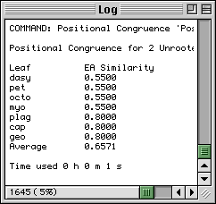
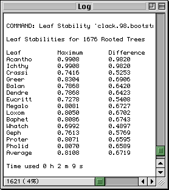
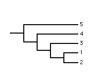
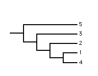
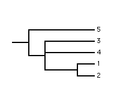
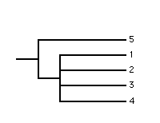
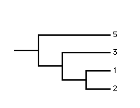
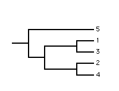
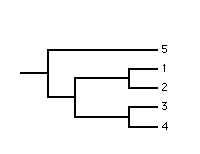
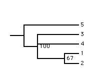

The commands for analysing a set of source trees are grouped together in the bottom half of the Source menu.
The user should note that the commands are implemented on the subset of source trees that are both selected and active.
The weight of a tree determines its influence on an analysis.
RadCon can calculate the Positional Congruence and Leaf Stability of the leaves in the source trees. In addition RadCon can perform a Double Decay Analysis on a set of MPTs and output the Adams, strict Component, majority-rule Component, semi-strict Component and basic strict Reduced Consensus trees of the source trees and convert the source trees into their Matrix Representation for supertree construction.
The influence of each tree on an analysis is determined by its weight relative to the other trees. Many tree programs assign the trees in a set equal weight. RadCon, however, allows differential weighting of trees. Consider a set of three source trees of weight 1. These three trees will have equal influence on any analysis conducted. Imagine now that two of the trees are identical. If the two identical trees were to be condensed and the remaining copy assigned a weight of 2 then although one of the copies would have been deleted the remaining copy would now have twice the influence and the results of any analysis would be unaffected.
The Positional Congruence ( Estabrook, 1992) of a leaf is a measure of the agreement, among a set of trees, about the position of the leaf.
The Positional Congruence measures proposed by Estabrook (1992) are extensions of the tree congruence (similarity) measures proposed by Estabrook et al. (1985). These earlier authors defined one measure of the similarity of two unrooted trees to be the fraction of the total number of the quartets which are resolved and of the same type in the two trees. They called this measure EA Similarity - the acronym EA standing for Explicitly Agree as a quartet must explicitly agree, i.e., be resolved and of the same type in the trees, for it to be counted. Clearly in two identical bifurcating trees all quartets will explicitly agree and they will have an EA Similarity of 1. On the other hand as two trees become more disimilar EA Similarity will decrease to 0.

Estabrook's (1992) contribution was to extend the tree congruence measures of Estabrook et al. (1985) to measure, not the similarity of individual trees but instead, the similarity in placement of each leaf. This was done by considering, for each leaf, only the subset of quartets which include the leaf. Thus Estabrook (1992) defined the EA Similarity of a leaf in two unrooted trees to be the fraction of the total number of the quartets containing the leaf which are resolved and of the same type in the two trees. The user should be aware that the average EA Similarity of the leaves is the EA Similarity of the trees.
The congruence measures, for trees and leaves, proposed by Estabrook et al. (1985) and Estabrook (1992), can be readily extended to cases with rooted trees or more than two trees by considering resolved triplets and requiring explicit agreement across all the trees, respectively.
The figure illustrates typical output using an example from Estabrook (1992). The output shows that 66% of the total quartets are resolved and of the same type in the two trees, that 55% of the total quartets containing dasy, pet, octo and myo are resolved and of the same type and that there is more agreement between the two trees regarding the positions of the last three leaves than the other four.
It is important that phylogeneticists assess the support for their inferred phylogenetic trees.
The Leaf Stability (Thorley and Wilkinson, 1999 ) of a leaf is a measure of the support for the position of that leaf. The method like Positional Congruence is quartet/triplet based and the rationale simple. The phylogenetic relationships of a set of leaves are a function of the relationships among each subset of four/three leaves (quartet/triplet). Stable and unstable leaves will tend to occur in stable and unstable quartets/triplets, respectively. The average stability of the quartets/triplets including a leaf provides a measure of the stability of that leaf.
RadCon currently provides the user with three bootstrap based measures of the stability of quartets/triplets and one other measure based on the decay index.

RadCon currently provides the user with three bootstrap based measures of the stability of quartets/triplets. The first measure, Maximum, is the bootstrap proportion (BP) of the resolution of the quartet which occurs in the greatest proportion of bootstrap trees. The second measure, Difference, is the difference between the BPs of the two resolutions of the quartet which occur in the greatest and second greatest proportion of bootstrap trees. The third measure Entropy is the entropy of the BPs of the resolutions of the quartet. Other LS measures based on the bootstrap or other methods for assessing the stability of quartets/triplets, i.e., the Decay Index, are possible.
The figure illustrates typical output using the example from Thorley and Wilkinson (1999). When either measure is used Whatch is the least stable leaf.
The Leaf Stability (Decay Index) measure uses the decay index to quantify the support for the position of each leaf in a set of Most Parsimonious Trees (MPTs)
The procedure for calculating this LS measure is identical to that for a Double Decay Analysis. In fact when a Double Decay Analysis is performed the stabilities of the leaves in the MPTs, as measured by the Leaf Stability (Decay Index), are also provided.
Leaf Stability (Decay Index) is currently available for sets of rooted and unrooted MPTs with no more than 50 and 25 leaves, respectively.
Double Decay Analysis (DDA) (the reader is referred to Wilkinson etal. (2000) for a more complete exposition of the method) provides a complete summary of the support, as measured by the decay index, for all the full and partial splits common to a set of most parsimonious trees (MPTs).
Traditional Decay Analysis (TDA) only gives the support for the full splits. The full splits are often poorly supported but the partial splits may have high levels of support. TDA consequently paints an incomplete and often misleading picture.
DDA first calculates the decay indices of all the triplets/quartets common to all the MPTs and then fuses them up to give the decay indices of all the more inclusive splits. These splits along with their decay indices are presented in a partition table and a profile of support trees produced. RadCon currently only calculates the set of basic support trees, which in and of themselves, capture all the information in the partition table. However, the largest, most resolved or most informative support tree may be one of the derivative support trees, which are produced by fusing together one or more basic trees. The next release of RadCon should allow the generation of derivative support trees.
RadCon is unable to calculate the parsimony lengths of trees which necessitates the use of PAUP 4 (note this or later versions of PAUP must be used because the earlier versions cannot perform parsimony analysis with small backbone constraints) to calculate the decay indices of the triplets/quartets. The following procedure should be followed:
Consensus methods allow phylogeneticists to represents sets of trees in the form of consensus trees.
The plethora of available consensus methods is a reflection of the diversity of ways of achieving a consensus in the face of conflict. Many consensus methods can be classified according to the tree substructure they capture and the level of agreement between the source trees required. Consensus methods that fall within this classification are the Adams consensus method, the family of component consensus methods and the family of reduced consensus methods which capture nestings, full splits and all (full and partial) splits, respectively. With regard to the level of agreement strict, semi-strict and majority-rule consensus methods require total agreement, no conflict and greater than 50% agreement, respectively. So, for example, for an internal branch to appear in the strict component consensus tree the full split it corresponds to must have occurred in all the source trees.
RadCon provides the user with the Adams (strict nesting), strict component, strict basic reduced, semi-strict component and majority-rule component consensus methods. These methods are grouped under the submenu (in the Source menu) because they require the source trees to have identical sets of leaves. In contrast methods do not require the source trees to have identical sets of leaves. Consensus methods in this second class are typically used to 'fuse' trees with different (but overlapping) sets of leaves to produce supertrees - consensus trees with all the leaves in at least one of the source trees. MRP is the only supertree consensus method currently implemented in RadCon. See Sanderson et al (1998) for a review of supertrees and a discussion of MRP.
It is fitting that we start our discussion of consensus methods here as the Adams was the first consensus method to be proposed (Adams, 1972). The method resolves conflict by pulling leaves, which occur in variable positions on the source trees, down towards the root of the consensus tree. (note: the method is only defined for set of rooted source trees).
More formally the Adams consensus tree captures strict nestings, i.e., the internal branches in the Adams consensus tree correspond to those nestings which occur in all the rooted source trees.
|  |  |  |
| source 1 | source 2 | adams |
Clearly, in the two source trees leaf 4 occurs in variable positions and in the Adams consensus tree has been pulled down to the internal node corresponding to the most recent common ancestor of the alternative positions. Even though this example is simple to understand it illustrates the problem of ambiguity which is a shortcoming of the Adams consensus method. The polytomy in the Adams consensus tree is ambiguous because it cannot be determined if leaf 3 and/or leaf 4 occurs in variable positions in the source trees. Ambiguity means that the Adams consensus tree may provide little cladistic information despite being moderately resolved.
Amid a slew of contradictory papers attempting to quantify the congruence (agreement) of various methods of phylogenetic inference, Sokal and Rohlf (1981) proposed a consensus method which produces a single consensus tree which displays all and only those full splits (components) occuring in all the source trees. Although more commonly referred to in the literature as the strict consensus method we adopt the consensus terminology of Wilkinson (1994) which includes qualifiers specifiying both the agreement required between the source trees, i.e., strict, and the tree substructure captured, i.e., component.
|  | ||
| source 1 | source 2 | strict component |
The strict component consensus tree contains a single internal branch - that which partitions leaf 5 and the root from the remaining leaves - and corresponds to the only full split common to the two source trees. This example nicely illustrates a potential limitation of the strict component consensus tree - its insensitivity, i.e. the tree is largely unresolved despite the ocurrence of much shared cladistic structure.
The strict reduced consensus method has a more recent history than the Adams and strict component consensus methods. It was proposed by Wilkinson (1994) to overcome the limitations of these two earlier methods, i.e., ambiguity and insensitivity, respectively. Informally, the method can be described as overcoming these problems through the exclusion from the consensus tree of leaves whose variability in position prevents unambiguous representation of the remaining leaves. Often different combinations of leaves can be excluded to achieve unambiguity a phenomenon that results in the method outputting a set or profile of strict reduced consensus trees. More formally, the method identifies the full and partial splits common to the source trees and represents them in the form of one of more trees.
The user should be aware that trees in the same reduced consensus profile are not conflicting alternatives. The trees in the same profile are compatible and complementary and each provides additional information about the relationships common to the source trees. If a choice is necessary the user can use Cladistic Information Content (CIC) to identify the most informative tree.
|  | |||
| source 1 | source 2 | strict reduced 1 | strict reduced 2 |
In the above example there are two trees in the strict reduced consensus profile with CICs of 2.807 and 3.907 bits, respectively.
The user should be aware that RadCon currently only produces the basic strict reduced consensus profile of a set of source trees. Although the basic trees capture all the split information common to the source trees it is often possible to fuse basic trees to produce derivative trees (Wilkinson, 1995). Derivative trees represent new combinations of the split information in the basic trees and the tree with the highest CIC may be a derivative tree. Derivative strict reduced consensus trees will be added to a later version of RadCon.
The semi-strict component consensus method, which is also known as the combinable components consensus method, was developed by Bremer (1982). The method produces a single consensus tree whose internal branches represent full splits which occur in at least one of the source trees and are compatible with all the source trees.
The consensus tree produced will only differ from the strict component consensus tree if one or more of the source trees contains a polytomy.
| source 1 | source 2 | strict component | semi-strict component |
The majority-rule component consensus method was developed by Margush and McMorris. The internal branches in the single consensus tree correspond to those full splits (components) which occur in more than half the source trees. Typically the internal branches are labelled with their frequency of occurrence in the source trees. The method is useful when a well resolved consensus tree is required. Additional resolution can be achieved by adding minority-compatible components, i.e., components which occur in less than 50% of the source trees and do not conflict with the components currently in the consensus tree.
The method is most commonly used for summarising the results of a bootstrap analysis. It is well suited for this purpose as the consensus tree displays the best supported full splits with their BPs (note: the frequency of occurrence of a full split in a set of bootstrap trees is its BP).
|  |  |  | |
| source 1 | source 2 | source 3 | majority-rule component |
RadCon also gives the user the option to list, in the Log window, all the components (full splits) that occur in the source trees with their frequency of occurrence (note: when the trees are a set of bootstrap trees the frequency of occurrence of a full split is its BP). Displaying all full splits allows the user to assess the support for, or stability of, alternative hypothesis. In addition RadCon is able to calculate the difference between the frequency of each full split and its strongest competitor, i.e., the frequency of the incompatible split which occurs in the greatest proportion of the trees. If the incompatible split occurs in a greater proportion of the trees then the difference will be negative.
MRP, which stands for Matrix Representation with Parsimony analysis, was independently proposed as a way of combining trees by Baum (1992) and Ragan (1992). MRP is a supertree consensus method as the source trees are not required to have identical sets of leaves. RadCon converts a set of source trees into a matrix of binary characters for input into PAUP. The trees can be represented as components or resolved triplets/quartets if rooted/unrooted. The only limitation is that the number of cells in the matrix is less than 106.
Go to the Table of Contents.
This page is maintained by joe@poissonconsulting.ca
© Copyright 1999, 2000, 2001, Joseph L. Thorley and Mark Wilkinson. All rights reserved.